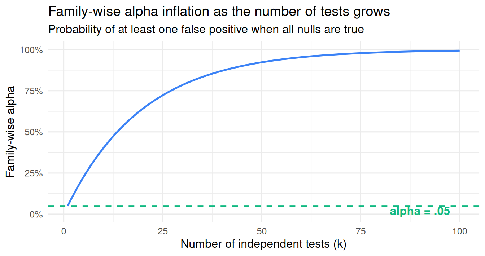

25 Two roles, multiple testing, and pre-registration
25.1 Where we are
The last four chapters built up the machinery of statistical inference, both its concepts (Chapter 21), its philosophies (Chapter 22), its mathematical apparatus (Chapter 23), and its decision-theoretic structure (Chapter 24). Throughout, we have written as if the researcher runs a single, pre-specified test on a fresh sample with a single hypothesis derived from a clear rationale. That is the idealized case for which the Neyman-Pearson framework’s calibrated error rates apply cleanly.
Real research is messier. A real dataset has many possible variables, many possible analyses, many possible exclusion rules. The researcher who collected it has their own intuitions and theories, which are influenced (often unconsciously) by what the data look like. The space of analyses that could be run on the dataset is large; the space of analyses that will be reported in the paper is small. Connecting those two spaces honestly is one of the hardest methodological problems in empirical science.
This chapter is about that connection. By the end of the chapter you will know:
- the two roles a researcher plays in any data analysis: the analyst, who explores, and the claim-maker, who commits to inferences,
- why Neyman-Pearson’s calibrated error rate breaks the moment the procedure is shaped by the data,
- the math and the intuition of alpha inflation when many tests are run,
- three families of multiple-testing corrections (Bonferroni, Holm, Benjamini-Hochberg) and how to choose between them,
- the positive predictive value (PPV) framework introduced by Ioannidis, which gives a chilling answer to the question “what fraction of published positive findings are actually true,”
- the difference between exploratory and confirmatory analysis when both are seen through the lens of the two roles,
- pre-registration as the technology that lets researchers maintain both honestly,
- and the visible failure modes of misuse: p-hacking, HARKing, and the “garden of forking paths.”
This chapter closes Section 4. By its end, you will have a complete framework for reading p-values critically and designing studies that produce calibrated, interpretable inferences.
25.2 The two roles
A single researcher, working with a single dataset, plays two epistemically different roles. The same person, the same data. But the standards differ.
25.2.1 The analyst
The analyst is the researcher exploring the data. The analyst’s job is to find interesting patterns, generate ideas, follow leads. The analyst can run many tests, fit alternative models, try different exclusion rules, peek at p-values, and abandon dead ends. The analyst is allowed to be opportunistic. No rules constrain what the analyst can do, because the analyst is not yet making any claim to anyone.
The output of the analyst’s work is hypotheses, not conclusions. If the analyst notices that violent video games seem to affect aggression more strongly among male participants than female ones, that is not yet a finding. It is a candidate finding, a pattern in this dataset that could be tested in a future, properly designed study.
As long as no one is going to act on the analyst’s output, this kind of exploration is harmless. There are no false positives in a world where no one is making claims. Exploration is how science generates new ideas.
This framing matters because it removes the moralism that often surrounds exploratory analysis in psychology. Exploration is not a sin. The problem is never exploration itself; the problem is exploration disguised as confirmation.
25.2.2 The claim-maker
The claim-maker is the researcher offering an inference to the broader scientific community. They are saying: “Based on this study, here is a conclusion that you can rely on for further action.” Other people, the reader of the paper, the policymaker reading the recommendation, the next researcher building on the finding, the practitioner deciding whether to adopt this intervention, will act on what the claim-maker says.
Because other people will act, the claim-maker is bound by the Neyman-Pearson framework. They must pre-specify the procedure. They must accept the calibrated error rate. They must report the result honestly, whether it favors their hypothesis or not. The framework’s promise of calibrated long-run error rates only works if the procedure is fixed in advance and run as specified.
The output of the claim-maker’s work is decisions: “We reject H₀ at α = .05,” or “We fail to reject H₀ at α = .05.” These are binary commitments that other people will rely on.
25.2.3 Both roles, same person, same data
In practice, the same researcher does both. They explore, then they confirm. They look at the data, generate hypotheses, design a follow-up, run the test, report the result. There is nothing wrong with this; it is how science works. What is required is that the two roles be kept separate in the report.
A clean paper might contain both:
- A confirmatory section reporting pre-specified tests, with calibrated error rates.
- An exploratory section reporting whatever the researcher noticed in the data, clearly labeled as exploratory, with no claim to calibrated p-values.
Both sections can appear in the same paper. They serve different functions. The reader knows what to trust and what to read as suggestive.
The key technology that lets a researcher inhabit both roles cleanly is pre-registration, which we develop in detail later in this chapter.
25.3 Why the framework requires a fixed procedure
The Neyman-Pearson promise of calibrated error rates is a promise about a particular kind of object: a procedure. Not a finding, not a discovery, not an analysis. A procedure.
A procedure is the full specification of what you are going to do, written before you see the data. It includes:
- The hypothesis you will test.
- The statistic you will compute.
- The α level you will use.
- The decision rule (reject if p < α).
- Implicitly, every choice you have made about how to clean, transform, and analyze the data.
The 5% calibration says this: if you run THIS PROCEDURE, with the null actually true, you will reject in about 5% of the long-run repetitions. That is the long-run frequency the framework is built on.
The catch is that the procedure must be a fixed object, specified independently of the data. The moment the procedure depends on the data, the framework’s guarantees disintegrate.
What does “the procedure depends on the data” look like in practice? It looks like:
- Looking at the data and then deciding which variables to include.
- Trying several analyses and reporting the one with the smallest p-value.
- Removing observations after seeing how they affect the result.
- Splitting the sample by a covariate after noticing it looks interesting.
- Adding control variables after the first analysis was not significant.
- Changing α after seeing the p-value (“p = .07 is close enough”).
- Stopping data collection when the result looks favorable, or continuing until it does.
Each of these turns the procedure from a fixed object into a function of the data. The moment the procedure is a function of the data, its actual long-run false-positive rate is no longer α. It is higher, often dramatically so.
The math is unforgiving here. We are about to see exactly how much higher.
25.4 Alpha inflation: the math
If you run a single test at α = .05, you accept a 5% false-positive risk for that test. If you run several tests, each at α = .05, on data where the null is true for all of them, what is the probability that at least one rejects?
Assume the tests are independent. The probability that any one test does NOT reject is (1 − α) = 0.95. The probability that all k tests do not reject is (1 − α)^k. The probability that at least one rejects, just by chance, is:
\[ P(\text{at least one false positive}) = 1 - (1 - \alpha)^k. \]
This is the family-wise error rate, the chance that the family of tests produces at least one false positive when all nulls are true.
For α = .05:
The dashed green line at .05 is your intended false-positive rate. The blue curve is the actual family-wise rate. The two coincide only at k = 1. At k = 5 tests, the actual rate is already about 23%. At k = 10, about 40%. At k = 20, about 64%. At k = 100, about 99%.
By 100 tests, you are essentially certain to have at least one false positive, even if every null is true. By 20 tests, you are more likely than not. By 5 tests, you have nearly five times the rate you committed to.
This is what the “consumption” metaphor of alpha captures: each test consumes some of the family-wise tolerance for false positives. Run enough tests and the tolerance is exhausted.
25.4.1 Two layers of p-value interpretation
A single p-value, in isolation, has its standard interpretation: the probability of data this extreme under H₀, given that this is the test that was run.
The same p-value, embedded in a family of tests, no longer corresponds to a 5%-false-positive procedure. A p of .03 in isolation is moderately surprising under the null. The same p of .03, as one of twenty tests run on the data, is unsurprising; you would expect about one such result by chance.
Whether a p-value is “real evidence” depends on how many tests were run, not on the p-value alone.
25.5 Multiple-testing corrections
A correction is a tool for translating between the per-test rate (α) and the family-wise rate. It lets us preserve a target family-wise error rate while still running multiple tests.
We will introduce three procedures: Bonferroni (the simplest), Holm (a refinement of Bonferroni), and Benjamini-Hochberg (which controls a slightly different quantity). The differences matter, and they connect to different research situations.
25.5.1 Bonferroni: the conservative classic
The Bonferroni correction is the simplest. To control the family-wise error rate at α across k tests, you compare each individual p-value to α / k instead of α.
Intuition. You started with a 5% tolerance for false positives. Divide that tolerance equally among your k tests, and each test gets 5% / k. Across all k tests, the false-positive rate stays bounded by the original 5%.
A worked example. Imagine a study where you run 5 tests at α = .05.
- Without correction: each test uses α = .05. Family-wise rate is about 23%.
- With Bonferroni: each test uses α = .05 / 5 = .01. Family-wise rate stays at most .05.
Concretely, suppose your five tests produced p-values of .03, .015, .002, .12, and .80. Under the uncorrected rule (α = .05), you would reject three of them. Under Bonferroni (α / 5 = .01), you would reject only one (the p = .002). The other two (.03 and .015) are still notable in isolation, but in the context of running 5 tests at once, they do not clear the corrected threshold.
pvals <- c(.03, .015, .002, .12, .80)
# Reject under uncorrected rule:
which(pvals < .05)[1] 1 2 3# Reject under Bonferroni at family-wise alpha = .05:
which(pvals < .05 / 5)[1] 3# Or in R using p.adjust:
p.adjust(pvals, method = "bonferroni")[1] 0.150 0.075 0.010 0.600 1.000The function p.adjust() returns the adjusted p-values: the originals multiplied by the number of tests (capped at 1.0). You can then compare the adjusted p-values directly to your original α.
When Bonferroni is appropriate. When any single false positive in the family of tests is a serious problem. For example: the primary outcomes of a clinical trial, where one false positive could lead to approving a treatment that does not work; the conclusions of a regulatory decision, where the stakes of error are high.
The cost of Bonferroni. It is conservative. Splitting α equally across k tests makes each individual test much less powerful. With 20 tests, each test runs at α = .0025, which is a stringent threshold. Real effects below that threshold will be missed.
25.5.2 Holm: same control, less conservative
The Holm correction is a sequential refinement of Bonferroni. The idea is the same (control family-wise α at .05), but the math is less wasteful.
Procedure. Sort the p-values from smallest to largest. Compare the smallest to α / k. If it is significant, compare the next smallest to α / (k − 1). Continue down the ladder; the j-th smallest p-value is compared to α / (k − j + 1). Stop the first time a comparison fails: from that point on, do not reject.
Intuition. If you have already “used up” some of your testing budget on the smallest p-values, the remaining budget is shared across fewer tests, so the threshold for each subsequent test is less strict. The total family-wise rate is still bounded by α, but each individual test can use a larger threshold than in pure Bonferroni.
p.adjust(pvals, method = "holm")[1] 0.09 0.06 0.01 0.24 0.80In our example, Holm and Bonferroni give similar results (mostly the same rejections), but Holm has slightly more power: where Bonferroni rejects only the smallest p-value, Holm may reject one or two more, depending on the gaps between the sorted p-values.
When Holm is appropriate. Anywhere Bonferroni is appropriate. Holm controls the same quantity (family-wise α) with a small power gain. Most modern multiple-comparison guidance recommends Holm over Bonferroni for this reason.
25.5.3 Benjamini-Hochberg: a different target
Benjamini-Hochberg (often abbreviated BH or FDR) controls a different quantity. Instead of the family-wise error rate, it controls the false discovery rate: the expected proportion of false positives among the tests we reject.
The distinction. Family-wise error rate asks: what is the probability that at least one of my rejections is false? FDR asks: of my rejections, what fraction can I expect to be false?
These are different questions with different answers. The family-wise rate is more conservative; if you have 100 tests and want to be 95% sure none of your rejections is false, Bonferroni or Holm forces a strict per-test threshold. FDR is more permissive; if you have 100 tests and reject 20 of them, controlling FDR at 5% means you expect about 1 of those 20 to be false, which is a different (and more lenient) standard.
Procedure. Sort p-values from smallest to largest. The j-th smallest p-value is compared to (j / k) × α. Find the largest j for which p ≤ (j / k) × α; reject all p-values up to that one.
p.adjust(pvals, method = "BH")[1] 0.0500 0.0375 0.0100 0.1500 0.8000When BH is appropriate. When you are screening many hypotheses and accepting a small proportion of false discoveries is tolerable. The canonical example is genomics: a study tests tens of thousands of genes for differential expression; controlling family-wise α at .05 across 20,000 tests would make every per-test threshold absurdly strict (α / 20,000 = .0000025), and very few real effects would be detected. FDR is more useful here: of the 100 genes you flag as differentially expressed, you expect about 5 to be false, which is reasonable for an exploratory screen.
In psychology, BH is appropriate when you have many secondary outcomes and the goal is to flag candidates for follow-up, not to make irrevocable decisions. Bonferroni or Holm is appropriate when each test corresponds to a decision that matters individually.
25.5.4 Which correction to use, summarized
| Goal | Correction | Family-wise alpha controlled? | Power |
|---|---|---|---|
| Strict family-wise control; any false positive matters | Bonferroni | Yes | Lowest |
| Strict family-wise control with slightly more power | Holm | Yes | Higher than Bonferroni |
| Control the proportion of false discoveries among rejections | Benjamini-Hochberg (FDR) | No (different target) | Highest of the three |
The choice depends on the cost of false positives. If a single false positive is costly (a clinical recommendation, a primary outcome in a trial), use Holm or Bonferroni. If you are screening many candidates and a small false-positive rate among rejections is acceptable, use BH.
25.6 Ioannidis and the positive predictive value
We now look at multiple testing from a different angle. Instead of asking “what is the false-positive rate of the procedure,” we ask: of the published results that report a “significant” finding, what fraction are actually true?
This is the question John Ioannidis famously posed in his 2005 paper Why Most Published Research Findings Are False. The answer he developed depends on three quantities:
- The prior probability that any given hypothesis being tested is actually true. Call this R / (R + 1), where R is the ratio of true effects to null effects in the research field. If 1 in 10 hypotheses tested is actually true, R = 0.1 and the prior is about 9%.
- The power of the studies in the field (1 − β).
- The alpha level they use (α).
The positive predictive value (PPV) is the probability that a finding reported as significant is actually a true effect:
\[ \text{PPV} = \frac{(1 - \beta) \cdot R}{(1 - \beta) \cdot R + \alpha}. \]
Let’s plug in some realistic numbers. Suppose:
- The field tests many hypotheses, but only about 1 in 10 reflects a true effect (R = 0.1).
- The typical study has 50% power (a commonly observed value for psychology).
- α = .05.
Then:
R <- 0.1 # 1 true effect for every 10 hypotheses tested
power <- 0.50
alpha <- 0.05
ppv <- (power * R) / (power * R + alpha)
ppv[1] 0.5About 50%. Half of the “significant” findings published in such a field are actually true. The other half are false positives, even though every study used α = .05.
If power is lower (say 30%) and the field tests broader, more speculative hypotheses (R = 0.05), the PPV drops below 25%. Most published positives are false. Ioannidis used calculations like this to argue that the published literature in many fields is heavily polluted by false positives.
A few things make the picture worse than even these numbers suggest:
- Multiple testing. If researchers run several tests and report only the significant one (as we have just seen), the effective α is higher than .05. This further reduces PPV.
- Publication bias. Significant results are more likely to be published than non-significant ones. This selectively elevates false positives in the published record.
- Researcher degrees of freedom. Choices made after seeing the data (which variables to include, which exclusion rules to apply) inflate the actual false-positive rate beyond .05.
The PPV framework is a useful lens. The headline number is not the per-test α; it is the proportion of published “significant” results that actually reflect a real effect, and that proportion depends on power, on the prior plausibility of the hypotheses, and on the discipline of the procedures used.
A short video by Veritasium summarizes the basics of PPV and the Ioannidis argument; it is a useful complement to the formal treatment above.
The practical takeaway: a published “p < .05” is not by itself a strong claim about truth. It is a piece of evidence whose strength depends on the prior plausibility of the hypothesis, the power of the study, and whether the procedure was fixed in advance.
25.7 Exploratory vs confirmatory analysis, in full
We now have all the pieces to develop a careful version of the exploratory-confirmatory distinction we sketched in Chapter 22.
25.7.1 The six-step argument
To see why the distinction matters, walk through the following six steps. The argument is not technical, but each step has to be made deliberately, because skipping any of them is where the confusion lives.
Step 1: what the p-value is. A p-value is the probability of data this extreme or more, under H₀, given the procedure that was run. The “given the procedure” is doing a lot of work. The p-value’s mathematical meaning depends on a specific assumed procedure. The formula computes the tail area of a reference distribution under that procedure.
Step 2: what “procedure” means. A procedure is the full specification of the test. It includes the hypothesis being tested, the statistic being computed, the sample being analyzed, the variables being included, the exclusion rules, and the decision rule. A procedure is specified before you see the data. It is a plan, not a description of what you ended up doing.
Step 3: what happens when you explore. When researchers explore, they do not commit to a procedure in advance. They look at the data, then choose what to test, then report the result. The choice of test depends on the data. The procedure was a function of the data.
Step 4: the p-value math assumes a fixed procedure. The math behind the p-value works only if the procedure is fixed independently of the data. When the procedure depends on the data, the correct reference distribution to use is wider than the one the formula assumes, because it would have to account for all the ways the researcher could have chosen the test, not just the one they actually chose.
Step 5: what the reported p-value actually reflects. In an exploratory analysis, the reported p-value does not have the meaning its formula assigns. It is something more like “across the many tests I could have run, this is the one with the smallest p-value.” Reporting it as if it were the only test you intended misrepresents the calibration.
Step 6: the result. A confirmatory p-value of .03 has the calibrated meaning the formula says it has: the reader can update beliefs accordingly. An exploratory p-value of .03 looks identical on the page but does not have the calibrated meaning. The reader cannot tell from the printed text which one they are looking at. That is exactly why some external mechanism is required to communicate the difference.
25.7.2 “Honestly quantified”
We have been using the phrase “calibrated” a lot. Let us make it precise.
A p-value of .03 is honestly quantified if the procedure that produced it has an actual long-run rejection rate of about 3% when H₀ is true. The stated probability matches the actual frequency.
An honest p-value comes from a procedure specified independently of the data. Pre-registration is the most credible way to demonstrate that, but it is not the only one. A hypothesis derived from theory and tested on new data, by a researcher who never looked at the data, is also honest. A pre-existing analytic protocol from a discipline, applied to new data, is honest.
A p-value is dishonest when the procedure depends on the data. This happens whenever:
- The researcher saw the data before deciding the procedure.
- The researcher tried multiple analyses and reported the most favorable.
- The researcher changed exclusion rules after seeing the result.
- The researcher selected the hypothesis from a list after noticing which one looked promising.
- The researcher peeked at the data during collection and stopped when results looked good.
The result is the same in each case: the p-value’s stated probability does not match the actual frequency. The number is real (it came from a real test on real data), but its meaning has been distorted by the procedure that produced it.
The central point. Pre-specification does NOT make findings more likely to be true. The same data, the same effect, the same analysis would produce the same numbers either way. What pre-specification does is make the surprise level calculable. In a pre-specified study, when you report p = .03, the number means what its formula claims. In an exploratory study, the reported p = .03 is not a meaningful probability statement.
25.8 Pre-registration
We have been talking around pre-registration for several chapters. Time to specify it.
25.8.1 What pre-registration is
A pre-registration is a public, time-stamped document that records, before data collection, exactly what the researcher plans to do. It includes:
- The research question.
- The hypotheses, stated explicitly.
- The sample size and stopping rule.
- The design (manipulations, control conditions).
- The variables that will be measured.
- The exclusion criteria.
- The exact analyses that will be run, including the statistical tests, the variables included, and the decision rules.
- The interpretation rules (what counts as supporting H₁, what counts as supporting H₀).
It is submitted to a public registry such as the Open Science Framework (OSF) or AsPredicted, which time-stamps and archives it. Once the data are collected and the paper is eventually written, the pre-registration becomes part of the public record of the study.
In the paper, the analyses listed in the pre-registration go in a confirmatory section with calibrated p-values. Anything not in the pre-registration goes in an exploratory section, clearly labeled as such, with no claim to calibrated p-values.
25.8.2 Why pre-registration
The reader’s perspective makes the case clear. A reader picks up a paper and is considering whether to update their beliefs, adopt an intervention, change a policy. They are about to act on the claim. What do they need to know to act responsibly?
They need to know the actual error rate of the procedure that produced the result. If the procedure has a 5% false-positive rate (as α = .05 would suggest), the reader can incorporate that into their judgment. If the procedure actually has a 30% false-positive rate (because the researcher explored extensively), the reader needs to know that, because they would weigh the evidence very differently.
The problem is that a paper, as text on a page, gives the reader no way to tell. Two papers reporting “p = .03” can look identical even if one is calibrated and the other is not.
Pre-registration is the technology that lets the reader distinguish. The time-stamped public document shows exactly what procedure the researcher committed to before seeing the data. Anything in the paper that matches the pre-registration is confirmatory (calibrated p-value). Anything that does not match is exploratory (uncalibrated, hypothesis-generating).
The math is already there; pre-registration provides the evidence the reader needs to apply the math correctly.
25.8.3 What pre-registration is not
Pre-registration is often misunderstood as a constraint on what researchers can do. It is not. Pre-registration constrains how findings are labeled, not what findings can be reported.
- A pre-registered study can still report exploratory findings, in addition to the pre-registered ones.
- A pre-registered study can deviate from the pre-registration, as long as the deviation is explicit and the affected analyses are labeled as exploratory.
- A pre-registration can be amended before data are seen.
- A pre-registration does not require any particular result. The researcher reports whatever they find, calibrated or not.
What pre-registration does is force a distinction between “what we said we would do” and “what we did when we saw the data.” That distinction is what enables the reader to apply the calibration correctly.
25.8.4 Pre-registration is sufficient but not strictly necessary
Strictly speaking, what is required for confirmatory inference is that the procedure was specified independently of the data. Pre-registration is the most credible way to demonstrate this, but it is not the only way.
Hypotheses derived from a published theory and tested on new data also count as confirmatory if the researcher never saw the data first. Replications of previously published findings count, since the procedure is determined by the original study. Studies using a standard, pre-existing analytic protocol from a research domain count.
In each case, the procedure was fixed by something external to the data. The p-value is honestly quantified.
Why, then, do we still teach pre-registration as the standard? Three reasons.
- Verifiable. A pre-registration is time-stamped and public. Readers can check that the procedure really was fixed in advance, rather than taking the researcher’s word for it.
- Specific. A pre-registration forces the researcher to commit to specifics (exclusion rules, exact tests, decision rules) that are easy to forget or unconsciously change.
- Demonstrably independent. Even if a researcher genuinely believes their hypothesis was theory-derived, the act of pre-registering provides external evidence that the procedure was not data-influenced.
For most researchers, most of the time, pre-registration is the workable solution. It does not require special philosophical sophistication; it just requires writing things down before looking at the data.
25.9 P-hacking, HARKing, and the garden of forking paths
Three names for the most common failure modes of role-separation.
P-hacking is the practice of trying many analyses on the same dataset, until one is significant, and reporting only that one. It can take many forms: trying different subgroups, different exclusion rules, different control variables, different transformations of the outcome. Each version produces a different p-value; the smallest one gets reported. The reader sees a clean “p = .03” with no indication of the search that produced it.
HARKing stands for Hypothesizing After Results are Known. It is the practice of writing up a finding as if you had predicted it, when in fact you noticed it in the data. HARKing presents an exploratory finding as confirmatory, with all the apparent calibration of a pre-specified test. The result is a paper where the predicted claim conveniently matches the observed result, and the reader has no way to tell whether the prediction was real.
The garden of forking paths (Gelman & Loken, 2014) is a subtler problem. Even sincere researchers who do not consciously p-hack face it. The data they collect informs the analytic choices they make. Different data would have led to different choices.
Imagine a researcher with a single hypothesis (“violent gaming increases aggression”). They collect data, run the test, p = .07. They notice the effect is stronger in male participants and decide to include gender as a moderator. Now p = .03. They report this with the moderator. The researcher was not consciously p-hacking; they had a single hypothesis. But the analytic decision (to include the moderator) was influenced by seeing the data. If the data had been different, they might not have run that analysis at all. The set of analyses that could have been run, conditional on what the data looked like, is large; the actual false-positive rate of the procedure is determined by all the branches, not just the one that was reported.
This is why even sincere researchers benefit from pre-registration. The forking paths are invisible to introspection. The researcher cannot tell, from the inside, whether their analytic decisions were data-influenced. Pre-registration cuts off the forking paths in advance.
25.10 Closing Section 4
We have now developed a complete framework for thinking about statistical inference in modern empirical science. Let us close with the most important takeaways from the five chapters.
- The sampling distribution is the bridge between the one sample we have and the population we care about. The standard error is its width. Inference is the discipline of reasoning from one to the other (Chapter 21).
- Two philosophies of testing exist. Fisher’s is a continuous measure of evidence; Neyman-Pearson’s is a binary decision procedure with calibrated long-run error rates. Modern practice uses a hybrid that is technically inconsistent (Chapter 22).
- The Neyman-Pearson framework has two dimensions. A quantitative procedure with controlled error rates, and a qualitative judgment about whether a predicted claim is corroborated. Both are needed for confirmatory inference; only the first applies to exploratory work (Chapter 22).
- P-values are computed by comparing a test statistic to a reference distribution. The test statistic is the standardized distance from the null; z, t, and F are the universal reference rulers. Degrees of freedom controls the shape of the reference (Chapter 23).
- The decision procedure produces two kinds of error: Type I (α) and Type II (β). Power is 1 − β, the rate of correct rejection given a specific alternative. α, β, effect size, and n are linked; pick three, the fourth is determined. SESOI is the smallest effect size of interest, the anchor that gives “power” a meaning. Equivalence testing lets you make positive “no meaningful effect” claims (Chapter 24).
- Researchers play two roles. The analyst explores; the claim-maker pre-specifies. The calibration of p-values requires a fixed procedure. Exploration is harmless as long as it is labeled honestly. Alpha inflates with multiple tests; corrections (Bonferroni, Holm, BH) translate between layers. Ioannidis’ PPV shows that even at α = .05, a large fraction of published “significant” findings can be false when power is low and the prior plausibility of hypotheses is modest. Pre-registration is the practical discipline that lets researchers maintain both honesty and credibility (Chapter 25).
The next sections of the book will move on from inference proper. We will see how the same linear-model framework from Section 3 can absorb t-tests, ANOVA, regression, and many “different” tests into a single unified machinery (and how this connects to inference in a clean way). We will also turn to causal inference, the question of when statistical relationships can be interpreted as causal: what experimental designs, what observational adjustments, what assumptions are required.
But this is the close of Section 4. The conceptual machinery of statistical inference is in your hands.
25.11 Check your understanding
1. What is the distinction between the analyst role and the claim-maker role?
2. Why does the Neyman-Pearson framework require a procedure that is fixed independently of the data?
3. If you run 5 independent tests, each at α = .05, on data where all five nulls are true, what is the probability of at least one false positive?
4. What is the difference between the Bonferroni and Holm corrections?
5. What does the Benjamini-Hochberg (FDR) correction control, and when is it appropriate?
6. What is the positive predictive value (PPV) of a research field, in Ioannidis’s framework?
7. What does pre-registration do, and why is it useful?
8. What are p-hacking and HARKing?
9. What is the “garden of forking paths” and why does it matter for inference?
10. What is equivalence testing, and what role does SESOI play in it?
25.12 References
Benjamini, Y., & Hochberg, Y. (1995). Controlling the false discovery rate: A practical and powerful approach to multiple testing. Journal of the Royal Statistical Society. Series B, 57(1), 289-300.
Gelman, A., & Loken, E. (2014). The statistical crisis in science. American Scientist, 102(6), 460-465.
Holm, S. (1979). A simple sequentially rejective multiple test procedure. Scandinavian Journal of Statistics, 6(2), 65-70.
Ioannidis, J. P. A. (2005). Why most published research findings are false. PLOS Medicine, 2(8), e124. https://doi.org/10.1371/journal.pmed.0020124
Kerr, N. L. (1998). HARKing: Hypothesizing after the results are known. Personality and Social Psychology Review, 2(3), 196-217.
Lakens, D. (2022). Improving your statistical inferences. Chapter 2, “Error control.” https://lakens.github.io/statistical_inferences/02-errorcontrol.html
Mesquida, C., Warne, J., & Lakens, D. (2025). What is your hypothesis? On the importance of knowing your hypothesis before conducting a hypothesis test. SportRxiv. https://doi.org/10.51224/SRXIV.577
Simmons, J. P., Nelson, L. D., & Simonsohn, U. (2011). False-positive psychology: Undisclosed flexibility in data collection and analysis allows presenting anything as significant. Psychological Science, 22(11), 1359-1366.